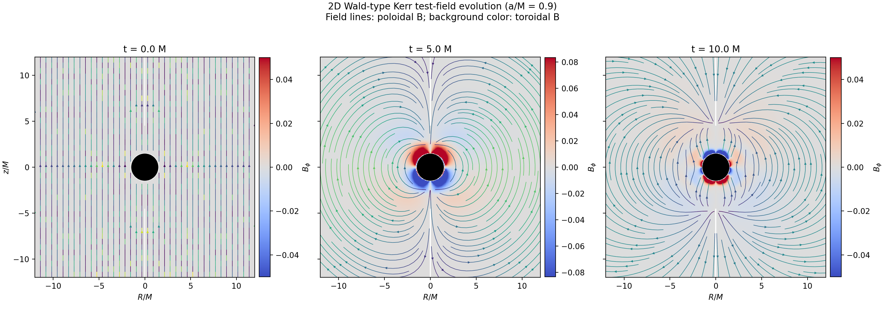
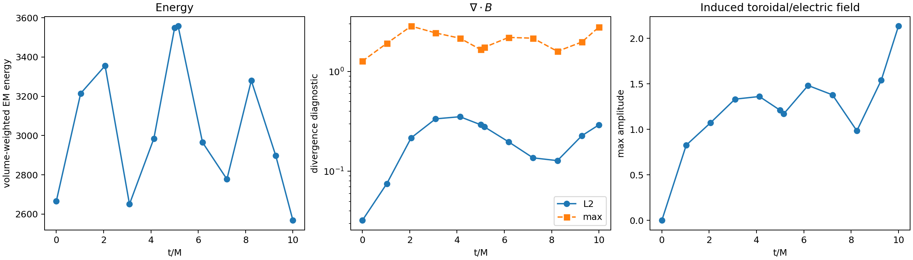
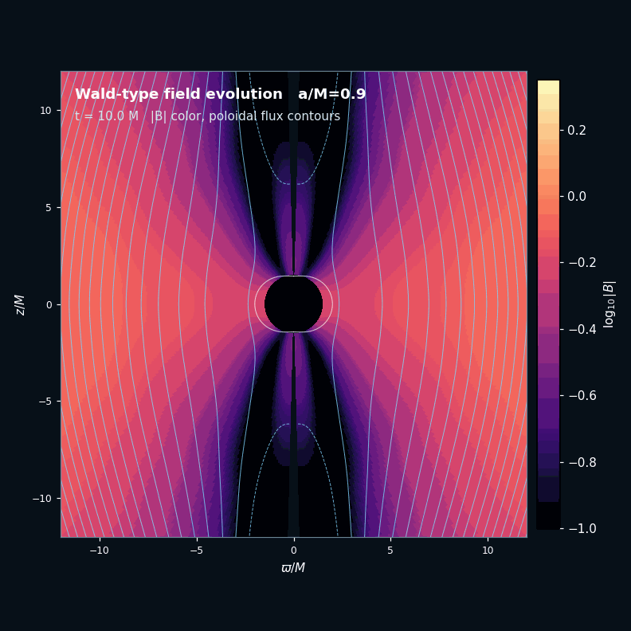
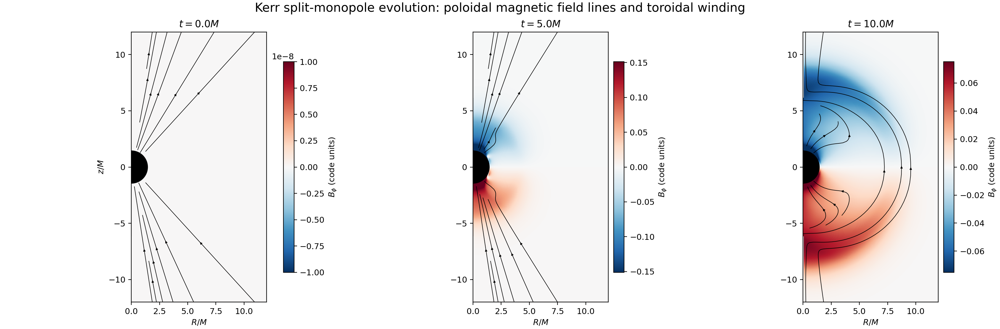
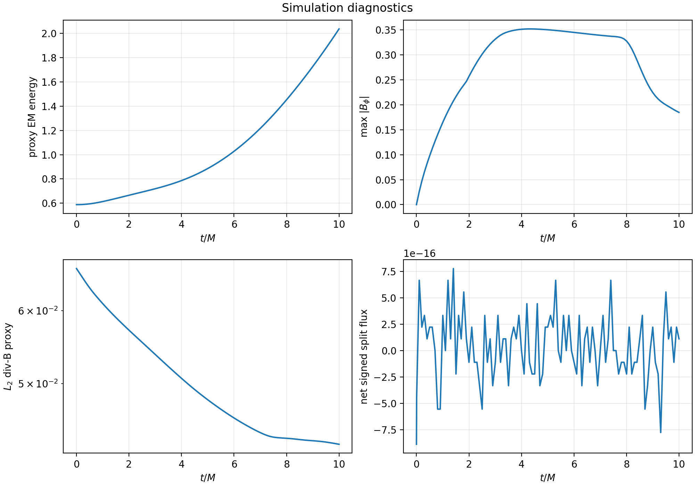

Research note · Numerical methods
General Relativistic Electrodynamics
In this deep dive we look at the general relativistic extension of Maxwell's equations to the curved spacetimes around black holes and other extreme environments.
Corresponding GitHub Repository
In this numerics deep dive, we use Lanyon to explore the general relativistic extension of Maxwell’s equations for electromagnetism in curved spacetimes. We show how Lanyon can be used to implement and formally verify solvers for the general relativistic and perfectly hyperbolic general relativistic Maxwell equations in arbitrary dimensions, as well as to perform simulations of magnetospheres and jets around spinning black holes.
The Theory
This note is an extension of our previous technical deep dive exploring Maxwell’s equations for electromagnetism using Lanyon. This extension is intended to demonstrate how Lanyon can also be used to implement and formally verify solvers and simulations in complex geometries, such as the curved spacetime environments surrounding compact objects in general relativity.
Remarkably, Maxwell’s equations for electromagnetism, despite predating the special theory of relativity by approximately half a century, are actually relativistically correct: they can be applied without modification even at relativistic speeds, at least within a flat spacetime geometry. Indeed, maintaining the gauge invariance of Maxwell’s equations (i.e. the equivalence of the form of the equations under global spacetime coordinate transformations) was one of the key desiderata within Einstein and Lorentz’s original formulation of the special theory of relativity.
However, in order to make Maxwell’s equations applicable to the extreme environments surrounding black holes, neutron stars, white dwarves, and other compact objects, it is necessary to extend them to full general relativity. This entails making them consistent with the much stronger condition of local gauge invariance, in which the form of the equations must remain equivalent even when the spacetime coordinates change from point-to-point: a condition which is necessitated by the presence of spacetime curvature. In what follows, we assume an arbitrary curved spacetime manifold with metric tensor ${g_{\mu \nu}}$. We use Greek indices ${\mu}$, ${\nu}$, ${\sigma}$, etc. to refer to spacetime coordinate bases, and Latin indices $i$, $j$, $k$, etc. to refer to spatial coordinate bases. We also assume the Einstein summation convention, in which any repeated indices are implicitly summed over.
We start from the electric scalar potential ${\phi}$ and the (spatial) magnetic vector potential ${A^i}$, and use these to assemble a combined spacetime electromagnetic vector potential ${\mathbf{A}}$ (whose timelike component is ${A^t = \phi}$ and whose spacelike components are ${A^i}$). From this we build the electromagnetic field tensor ${F_{\mu \nu}}$ as the commutator of the covariant derivative operator ${\nabla}$ and the spacetime electromagnetic vector potential ${\mathbf{A}}$:
$$ F_{\mu \nu} = \nabla_{\mu} A_{\nu} - \nabla_{\nu} A_{\mu} = \partial_{\mu} A_{\nu} - \partial_{\nu} A_{\mu} $$where ${A_{\mu} = g_{\mu \nu} A^{\nu}}$ are the 1-form components of the spacetime electromagnetic vector potential ${\mathbf{A}}$. Note that, even in curved spacetime, the covariant derivative operator ${\nabla}$ here reduces to a partial derivative operator ${\partial}$, due to the antisymmetry of the electromagnetic field tensor ${F_{\mu \nu}}$ (causing the Christoffel symbol terms which would otherwise appear here to cancel each other out).
From here, Maxwell’s equations in curved spacetime decompose into a homogeneous piece:
$$ \nabla_{\nu} \, {}^{\star} F^{\mu \nu} = \partial_{\nu} \, {}^{\star} F^{\mu \nu} + \Gamma_{\nu \sigma}^{\mu} \, {}^{\star} F^{\sigma \nu} + \Gamma_{\nu \sigma}^{\nu}\, {}^{\star} F^{\mu \sigma} = 0 $$and an inhomogeneous piece:
$$ \nabla_{\nu} F^{\mu \nu} = \partial_{\nu} F^{\mu \nu} + \Gamma_{\nu \sigma}^{\mu} F^{\sigma \nu} + \Gamma_{\nu \sigma}^{\nu} F^{\mu \sigma} = I^{\mu} $$where ${F^{\mu \nu} = g^{\mu \alpha} g^{\beta \nu} F_{\alpha \beta}}$ for inverse spacetime metric tensor ${g^{\mu \nu} = \left( g_{\mu \nu} \right)^{-1}}$, and ${{}^{\star} F^{\mu \nu}}$ denotes the Hodge dual of ${F_{\mu \nu}}$, defined by:
$$ F^{\mu \nu} = - \frac{\sqrt{-g}}{2} \left( \varepsilon^{\mu \nu \alpha \beta} \, {}^{\star} F_{\alpha \beta} \right), \qquad \, {}^{\star} F^{\mu \nu} = \frac{\sqrt{-g}}{2} \left( \varepsilon^{\mu \nu \alpha \beta} F_{\alpha \beta} \right) $$where ${g = \det \left( g_{\mu \nu} \right)}$ is the spacetime metric determinant and ${\varepsilon^{\mu \nu \alpha \beta}}$ denotes the rank-4 totally-antisymmetric Levi-Civita symbol. In the above, ${\Gamma_{\mu \nu}^{\rho}}$ are the spacetime Christoffel symbols:
$$ \Gamma_{\mu \nu}^{\rho} = \frac{1}{2} g^{\rho \sigma} \left( \partial_{\mu} g_{\sigma \nu} + \partial_{\nu} g_{\mu \sigma} - \partial_{\sigma} g_{\mu \nu} \right) $$${\mathbf{I}}$ denotes the spacetime current density:
$$ I^{\mu} = \frac{1}{\mu_0} \partial_{\nu} \left( F^{\mu \nu} \sqrt{-g} \right) $$${\mu_0}$ is the vacuum permeability constant, and we have assumed vanishing electric and magnetic susceptibilities throughout.
The Numerics
The fully covariant forms of the Maxwell equations presented within the preceding section are highly elegant, but they are also not yet in a form that is conducive to numerical solution. In order to be able to reformulate (the hyperbolic part of) Maxwell’s equations in the familiar first-order, flux-conservative form described in our Grimoire:
$$ \frac{\partial \mathbf{Q}}{\partial t} + \nabla \cdot \mathbf{F} \left( \mathbf{Q} \right) = 0 $$we must proceed to break the covariance by explicitly imposing a gauge. Specifically, we adopt the formalism of Arnowitt, Deser, and Misner (ADM) to construct a ${3 + 1}$-decomposition (or foliation) of our spacetime into a time-ordered sequence of spacelike hypersurfaces ${\Sigma_{t_0}}$, for ${t_0 \in \mathbb{R}}$, yielding a spacetime line element of the form:
$$ ds^2 = g_{\mu \nu} \, dx^{\mu} \, dx^{\nu} = \left( - \alpha^2 + \beta_i \beta^i \right) \, dt^2 + 2 \beta_i \, dt \, dx^i + \gamma_{i j} \, dx^i \, dx^j $$where ${\gamma_{i j}}$ denotes the induced (spatial) metric tensor on each hypersurface ${\Sigma_{t_0}}$. In the above, the scalar lapse function ${\alpha}$ designates the proper time distance ${d \tau}$ between corresponding points on the neighboring hypersurfaces ${\Sigma_{t_0}}$ and ${\Sigma_{t_0 + dt}}$:
$$ d \tau \left( t_0, t_0 + dt \right) = \alpha \, dt $$and the spatial shift vector field ${\boldsymbol\beta}$ designates the distortion of the spatial coordinate basis ${x^i}$ between corresponding points on the neighboring hypersurfaces ${\Sigma_{t_0}}$ and ${\Sigma_{t_0 + dt}}$:
$$ x^i \left( t_0 + dt \right) = x^i \left( t_0 \right) - \beta^i \, dt $$with corresponding 1-form components ${\beta_i = \gamma_{i j} \beta^j}$. In the Hamiltonian formulation of general relativity due to ADM, the lapse ${\alpha}$ and shift ${\beta^i}$ components play the role of the Lagrange multipliers of the formalism.
We define an Eulerian observer to be an observer who remains at rest with respect to this spacetime foliation, and whose spacetime velocity vector ${\mathbf{u}}$ is therefore given by the unit normal vector ${\mathbf{n}}$ to each spacelike hypersurface ${\Sigma_{t_0}}$. We can compute the components of this unit normal vector via the contravariant derivative of the time coordinate $t$:
$$ n^{\mu} = - \alpha \nabla^{\mu} t = - \alpha g^{\mu \nu} \nabla_{\nu} t = - \alpha g^{\mu \nu} \partial_{\nu} t $$The electric and magnetic fields ${\mathbf{D}}$ and ${\mathbf{B}}$ as perceived by an Eulerian observer are then given by:
$$ D^{\mu} = \alpha F^{t \mu}, \qquad B^{\mu} = \alpha \, {}^{\star} F^{\mu t} $$respectively, such that the overall electromagnetic field tensor ${F_{\mu \nu}}$ can be expressed as:
$$ F^{\mu \nu} = n^{\mu} D^{\nu} - n^{\nu} D^{\mu} - \frac{1}{\sqrt{- g}} \left( \varepsilon^{\mu \nu \alpha \beta} n_{\alpha} B_{\beta} \right) $$If we now decompose the homogeneous part of Maxwell’s equations into timelike and spacelike projections, we obtain:
$$ \frac{1}{\sqrt{\gamma}} \partial_i \left( \alpha \sqrt{\gamma} \, {}^{\star} F^{t i} \right) = 0 $$and
$$ \frac{1}{\sqrt{\gamma}} \partial_t \left( \alpha \sqrt{\gamma} \, {}^{\star} F^{j t} \right) + \frac{1}{\sqrt{\gamma}} \partial_i \left( \alpha \sqrt{\gamma} \, {}^{\star} F^{j i} \right) = 0 $$respectively, where ${\gamma = \det \left( \gamma_{i j} \right)}$ is the spatial metric determinant. Next, we introduce the spatial vector field ${\mathbf{E}}$, whose 1-form components are given by:
$$ E_i = \frac{1}{2} \alpha \sqrt{\gamma} \, \varepsilon_{i j k} \, {}^{\star} F_{j k} $$where ${E^i = \gamma^{i j} E_j}$ for inverse spatial metric tensor ${\gamma^{i j} = \left( \gamma_{i j} \right)^{-1}}$, and ${\varepsilon_{i j k}}$ denotes the rank-3 totally-antisymmetric Levi-Civita symbol. This allows us to rewrite the timelike and spacelike parts of the homogeneous Maxwell equation as an elliptic divergence constraint for the magnetic field ${\mathbf{B}}$:
$$ \partial_i B^i = 0 $$and a corresponding hyperbolic evolution equation for the magnetic field ${\mathbf{B}}$:
$$ \partial_t B^i + \varepsilon^{i j k} \partial_j E_k = 0 $$respectively, the latter of which is now expressed correctly in first-order, flux-conservative form (and can therefore be evolved numerically via a high-resolution shock-capturing scheme). Likewise, if we now decompose the inhomogeneous part of Maxwell’s equations into timelike and spacelike projections, we correspondingly obtain:
$$ \frac{1}{\sqrt{\gamma}} \partial_i \left( \alpha \sqrt{\gamma} \, F^{t i} \right) = \alpha I^t $$and
$$ \frac{1}{\sqrt{\gamma}} \partial_t \left( \alpha \sqrt{\gamma} \, F^{j t} \right) + \frac{1}{\sqrt{\gamma}} \partial_i \left( \alpha \sqrt{\gamma} \, F^{j i} \right) = \alpha I^j $$respectively. Next, we introduce another spatial vector field ${\mathbf{H}}$, whose 1-form components are given by:
$$ H_i = \frac{1}{2} \alpha \sqrt{\gamma} \, \varepsilon_{i j k} F^{j k} $$where ${H^i = \gamma^{i j} H_j}$, as well as timelike and spacelike projections of the spacetime current density ${\mathbf{I}}$ into a charge density ${\rho_c}$ and a spatial current density ${\mathbf{J}}$:
$$ \rho_c = \alpha I^t, \qquad J^i = \alpha I^i $$As before, this allows us to rewrite the timelike and spacelike parts of the inhomogeneous Maxwell equation as an elliptic divergence constraint for the electric field ${\mathbf{D}}$:
$$ \partial_i D^i = \rho_c $$and a corresponding hyperbolic evolution equation for the electric field ${\mathbf{D}}$:
$$ \partial_t D^i - \varepsilon^{i j k} \partial_j H_k = -J^i $$respectively. Once again, the latter equation is now expressed correctly in first-order, flux-conservative form, and can therefore be evolved numerically.
The eigenvalues of the flux Jacobian ${\frac{\partial \mathbf{F}}{\partial \mathbf{Q}}}$ for Maxwell’s equations in curved spacetime in the $x$-direction are given by ${\left\lbrace - \alpha - \beta^x, - \alpha - \beta^x, \alpha - \beta^x, \alpha - \beta^x, 0, 0 \right\rbrace}$, and likewise for all other coordinate directions. As described previously in our technical deep dive on Maxwell’s equations, it is possible to introduce auxiliary scalar fields ${\psi}$ and ${\phi}$ for the purposes of correcting errors in the elliptic divergence constraints, characterized by corresponding propagation speeds ${\gamma}$ and ${\chi}$. The eigenvalues of the flux Jacobian ${\frac{\partial \mathbf{F}}{\partial \mathbf{Q}}}$ for the perfectly hyperbolic Maxwell equations in curved spacetime (in the $x$-direction) therefore become:
$$ \left\lbrace \left( - \alpha - \beta^x \right) \gamma, \left( \alpha - \beta^x \right) \gamma, \left( - \alpha - \beta^x \right) \chi, \left( \alpha - \beta^x \right) \chi, - \alpha - \beta^x, - \alpha - \beta^x, \alpha - \beta^x, \alpha - \beta^x \right\rbrace $$and likewise for all other coordinate directions. We leave a detailed analysis of this general relativistic extension of the perfectly hyperbolic Maxwell equations for a future Research Note.
The Proofs
Unsurprisingly, the full general relativistic forms of Maxwell’s equations are significantly more complex and subtle than their flat spacetime counterparts, thus necessitating more sophisticated computational implementations to solve, as well as more elaborate proof techniques to verify correctness. Lanyon-generated proofs of correctness for both the general relativistic and perfectly hyperbolic general relativistic Maxwell equations, in arbitrary dimensions, are presented in the Lanyon GitHub repository. Lanyon generated these proofs and solvers in a little over 5 minutes in all, generating almost 25,000 lines of Lean 4 proof and almost 12,000 lines of formally verified C kernels in the process. Some important highlights in the proofs:
-
Definitions of the fluxes, for example the flux in the $x$-direction, definitions of the wave-speeds, and other key definitions that appear in the various theorems.
-
Theorems of hyperbolicity in the $x$-direction, with similar proofs for the other directions; wave-jump consistency in the $x$-direction; etc. The most sophisticated proofs are those of flux conservation in each coordinate direction.
For the complete set of proofs, see the GitHub repository. For a primer on the various definitions and an overview of the mathematical identities used within the proofs, consult the Lanyon Formulary.
The Results
The Wald Solution around a Spinning Black Hole
First, we attempt to reproduce the exact solution to the Einstein-Maxwell equations derived by Wald (1974), describing a spinning black hole immersed in an initially-uniform magnetic field, threading the black hole in the poloidal direction. The Kerr metric for the spacetime surrounding a spinning black hole of mass $M$ and spin parameter ${a = \frac{J}{M}}$ is given in the Boyer-Lindquist oblate spheroidal coordinate system ${\left( t, r, \theta, \phi \right)}$ by:
$$ \begin{align} ds^2 = g_{\mu \nu} \, dx^{\mu} \, dx^{\nu} &= - \left( 1 - \frac{2 M r}{\Sigma} \right) dt^2 + \frac{\Sigma}{\Delta} dr^2 + \Sigma \, d \theta^2\\ &+ \left( r^2 + a^2 + \frac{2 M r a^2}{\Sigma} \sin^2 \left( \theta \right) \right) \sin^2 \left( \theta \right) d \phi^2 - \left( \frac{2 M r a \sin^2 \left( \theta \right)}{\Sigma} \right) dt \, d \phi \end{align} $$with ${\Sigma}$ and ${\Delta}$ defined by:
$$ \Sigma = r^2 + a^2 \cos^2 \left( \theta \right), \qquad \Delta = \left( r - r_{+} \right) \left( r - r_{-} \right) $$respectively, and where ${r_{-}}$ and ${r_{+}}$ denote the locations of the interior and exterior black hole horizons, respectively:
$$ r_{\pm} = M \pm \sqrt{M^2 - a^2} $$Wald (1974) showed that the steady-state solution for this problem corresponds to an electromagnetic field tensor ${F_{\mu \nu}}$ of the form:
$$ F_{\mu \nu} = B_0 \left( m_{\mu} - m_{\nu} + 2 a \left( k_{\mu} - k_{\nu} \right) \right) $$where ${\mathbf{k} = \partial_t}$ and ${\mathbf{m} = \partial_{\phi}}$ designate the two Killing vectors of the Kerr metric (one timelike, one spacelike).
Since the Wald (1974) setup is purely axisymmetric, we only need to solve the general relativistic Maxwell equations in two spatial dimensions. Therefore, we begin by prompting Lanyon1:
/deepthought Write a 2D general relativistic Maxwell solver.
which takes a few seconds, and we then proceed to prove correctness of the specification using /verify, and then to synthesize the formally verified C kernels conforming to this specification using /compile. Once this is done, we instruct Lanyon to run the Wald setup in ${\left( r, \theta \right)}$ coordinates (with the ${\phi}$ coordinate suppressed by axisymmetry), assuming a black hole spin of ${a = \frac{J}{M} = 0.9}$, with a resolution of 256 cells in $r$ and 256 cells in ${\theta}$, and then to return snapshots of the magnetic field configuration at times ${t = 0 M}$, ${t = 5 M}$, and ${t = 10 M}$:
/simulate Simulate a 2D Wald-type problem in r-theta coordinates, starting from a uniform poloidal magnetic field threading a spinning (Kerr) black hole with spin 0.9. Use a spatial resolution of 256 cells in r and 256 cells in theta. Return snapshots of the magnetic field lines at times t=0.0M, t=5.0M, and t=10.0M.
which results in the following visualiation:

The final profile qualitatively matches the analytical solution by Wald (1974) more-or-less perfectly (albeit with some inevitable numerical diffusion due to the diffusive nature of the method). We find that the total electromagnetic energy remains bounded (though numerical artifacts render it mildly oscillatory), the magnetic divergence errors remain bounded albeit quite large inside the black hole ergosphere, and the induced electric field inside the black hole ergosphere indeed grows progressively stronger as the black hole’s spin proceeds to twist up the initially-uniform magnetic field lines:

This twisting of the magnetic field lines within the ergospheres of spinning black holes is believed to be at least one of the dominant mechanisms powering the high-energy relativistic jets emitted from the centers of active galactic nuclei (the Blandford-Znajek mechanism). Indeed, Lanyon can model the formation of a small jet even within this very minimal simulation setup, as observed by plotting the poloidal magnetic flux in the final frame:

The Blandford-Znajek Split Monopole Solution
Finally, we attempt a problem based on the perturbative solution derived by Blandford and Znajek (1977) for the magnetosphere of a spinning black hole. The spacetime electromagnetic potential ${\mathbf{A}}$ is constrained to be both stationary (i.e. ${\partial_t A_{\mu} = 0}$) and axisymmetric (i.e. ${\partial_{\phi} A_{\mu} = 0}$). The function ${\psi \left( r, \theta \right)}$ designates the magnetic flux passing through a circular loop surrounding the black hole’s spin axis, and intersecting with the point ${\left( r, \theta \right)}$, namely:
$$ \psi \left( r, \theta \right) = A_{\phi} \left( r, \theta \right) $$while the function ${\Omega \left( r, \theta \right)}$ designates the angular velocity of the magnetic field lines:
$$ \partial_r A_t = - \Omega \, \partial_r \psi, \qquad \partial_{\theta} A_t = - \Omega \, \partial_{\theta} \psi $$and finally the functions $I$ and ${B^{\phi}}$ designate the total electric current flowing through this circular loop, and the strength of the toroidal magnetic field:
$$ I = \sqrt{-g} \, F^{\theta r}, \qquad B^{\phi} = \frac{1}{\sqrt{-g}} \, F_{r \theta} $$respectively. Collectively, these functions are subject to the integrability conditions:
$$ \partial_r \Omega \, \partial_{\theta} \psi = \partial_{\theta} \Omega \, \partial_r \psi, \qquad \partial_r I \, \partial_{\theta} \psi = \partial_r \psi \, \partial_{\theta} I $$as well as the stream equation:
$$ \Omega \partial_{\mu} \left( \sqrt{-g} \, F^{t \mu} \right) - \partial_{\mu} \left( \sqrt{-g} \, F^{\phi \mu} \right) - F_{r \theta} \frac{d I}{d \psi} = 0 $$Blandford and Znajek (1977) then impose the requirement that the magnetic flux ${\psi}$ should vanish at the black hole rotation axis (i.e. at ${\theta = 0}$), and that both ${\psi}$ and the toroidal magnetic field:
$$ B^{\phi} = - \frac{I \Sigma + \left( 2 M \Omega r - a\right) \sin \left( \theta \right) \partial_{\theta} \psi}{\Delta \Sigma \sin^2 \left( \theta \right)} $$should remain regular across the outer black hole horizon ${r = r_{+}}$. They proceed to expand these functions perturbatively, in powers of the dimensionless spin parameter ${\frac{a}{M} = \frac{J}{M^2}}$:
$$ \psi = \psi^{\left( 0 \right)} + \left( \frac{a}{M} \right)^2 \psi^{\left( 2 \right)} + \mathcal{O} \left( \left( \frac{a}{M} \right)^4 \right) $$$$ 2 M \Omega = \left( \frac{a}{M} \right) \Omega^{\left( 1 \right)} + \left( \frac{a}{M} \right)^3 \Omega^{\left( 3 \right)} + \mathcal{O} \left( \left( \frac{a}{M} \right)^5 \right) $$
$$ 2 M I = \left( \frac{a}{M} \right) I^{\left( 1 \right)} + \left( \frac{a}{M} \right)^3 I^{\left( 3 \right)} + \mathcal{O} \left( \left( \frac{a}{M} \right)^5 \right) $$
$$ B^{\phi} = \left( \frac{a}{M} \right) B^{\phi \left( 1 \right)} + \left( \frac{a}{M} \right)^3 B^{\phi \left( 3 \right)} + \mathcal{O} \left( \left( \frac{a}{M} \right)^5 \right) $$
To zeroth-order, we obtain a static monopole solution:
$$ \psi^{\left( 0 \right)} = 1 - \cos \left( \theta \right) $$while to first-order, we obtain a monopole solution that co-rotates with the event horizon, as first derived by Michel (1973) in the flat spacetime limit:
$$ I^{\left( 1 \right)} = \frac{1 - 2 \Omega^{\left( 1 \right)}}{2} \sin^2 \left( \theta \right), \qquad B^{\left( 1 \right) \phi} = - \frac{1 - 2 \Omega^{\left( 1 \right)}}{4 M r^2} - \frac{1}{2 r^3} $$and so on. As shown by Komissarov (2001), for slowly-rotating black holes (i.e. ${a \ll 1}$), the numerical and perturbative solutions tend to remain in very close agreement. We initialize a split monopole initial configuration, characterized by a purely radial magnetic field of initial strength ${B_0}$:
$$ B^r = \frac{1}{\sqrt{\gamma}} \left[ B_0 \sin \left( \theta \right) \right] $$surrounding the black hole, with the Znajek condition:
$$ H_{\phi} = - \frac{1}{8} a B_0 \sin^2 \left( \theta \right) $$further imposed in order to ensure both agreement with the flat spacetime solution of Michel (1973), and regularity of the toroidal magnetic field ${B^{\phi}}$ across the outer black hole horizon.
As previously, the axisymmetric nature of the Blandford-Znajek (1977) setup allows us to solve the general relativistic Maxwell equations in only two spatial dimensions, so we issue Lanyon the same initial prompt as before:
/deepthought Write a 2D general relativistic Maxwell solver.
and run /verify and /compile to produce correctness proofs and formally verified C implementations in the usual way. We now instruct Lanyon to run the Blandford-Znajek split monopole setup in ${\left( r, \theta \right)}$ coordinates (again with the ${\phi}$ coordinate suppressed by axisymmetry), assuming again a black hole spin of ${a = \frac{J}{M} = 0.9}$, with a resolution of 256 cells in $r$ and 256 cells in ${\theta}$, and then to return snapshots of the magnetic field configuration at times ${t = 0M}$, ${t = 5M}$, and ${t = 10M}$:
/simulate Simulate a 2D Blandford-Znajek-type problem in r-theta coordinates, starting from a split monopole magnetic field surrounding spinning (Kerr) black hole with spin 0.9. Use a spatial resolution of 256 cells in r and 256 cells in theta. Return snapshots of the magnetic field lines at times t=0.0M, t=5.0M, and t=10.0M.
which results in the following visualization:

The final profile behaves as expected, though again we see the significant effects of numerical diffusion. We find that the total electromagnetic energy grows without bound, the induced toroidal magnetic field eventually achieves a steady-state, and the divergence errors in the magnetic field gradually converge to zero even inside the black hole ergosphere:

Concluding Remarks
Many of the Research Notes that we have written thus far have concerned Lanyon’s ability to implement and verify equation solvers and computational simulations in relatively simple rectangular or Cartesian geometries. By contrast, this Research Note has illustrated Lanyon’s capabilities in extending such solvers to complex geometries and extreme physical conditions, such as the spacetimes surrounding rapidly spinning black holes (whose geometries contain multiple horizons, extended singularities, and many other potential sources of numerical pathologies), without any substantive modification to the workflow itself.
In future Research Notes, we intend to demonstrate more of Lanyon’s capabilities for general relativity and high-energy astrophysics, where extremes of energy density and spacetime curvature push one close to the limits of what can be simulated numerically, and where the kinds of formal guarantees of correctness and stability that Lanyon provides thereby become maximally valuable.
References and Footnotes
-
Note that, in contrast to many of our earlier Research Notes, we use the
/deepthoughtcommand rather than the/specifycommand to generate the solver specification, thereby engaging Lanyon’s deep reasoning model rather than using its default fast model. This is necessitated by the increased complexity of the equations and geometries appearing in general relativity. Nevertheless, note that Lanyon still takes less than 2 minutes and less than a few thousand tokens to complete each prompt. ↩︎